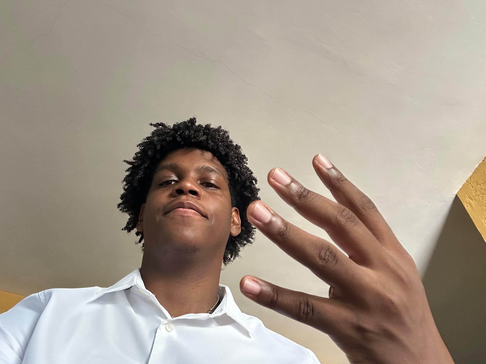

Christoff Cowan
Yup. Thats my name right up there. Just your average guy aiming to be an above average...some might even say overaverage. I love playing video games, watch movies and anime, and coding of course. I also like to read books, but I don't do that as often as I should. I love the word of God and try to lead a life befitting to Christ. My favorite movie is black panther, but I have a lot of favorite movies. My favorite video game is probably Apex Legends. I really resonate with the anime One Piece and draw some level of inspiration from Luffy and his crew. I also love to cook. I like build websites and found it to something I am pretty good at, thsi isnt my first website, but hoping this course elevates my skills a bit further to deliver a great service to my clients. Some might say my dream is vague, but I would say is it sums up everything I want to achieve is one word. I want to be... the greatest to ever do it. You'd just have to stic around to know what I mean. Thats all, Ciao!